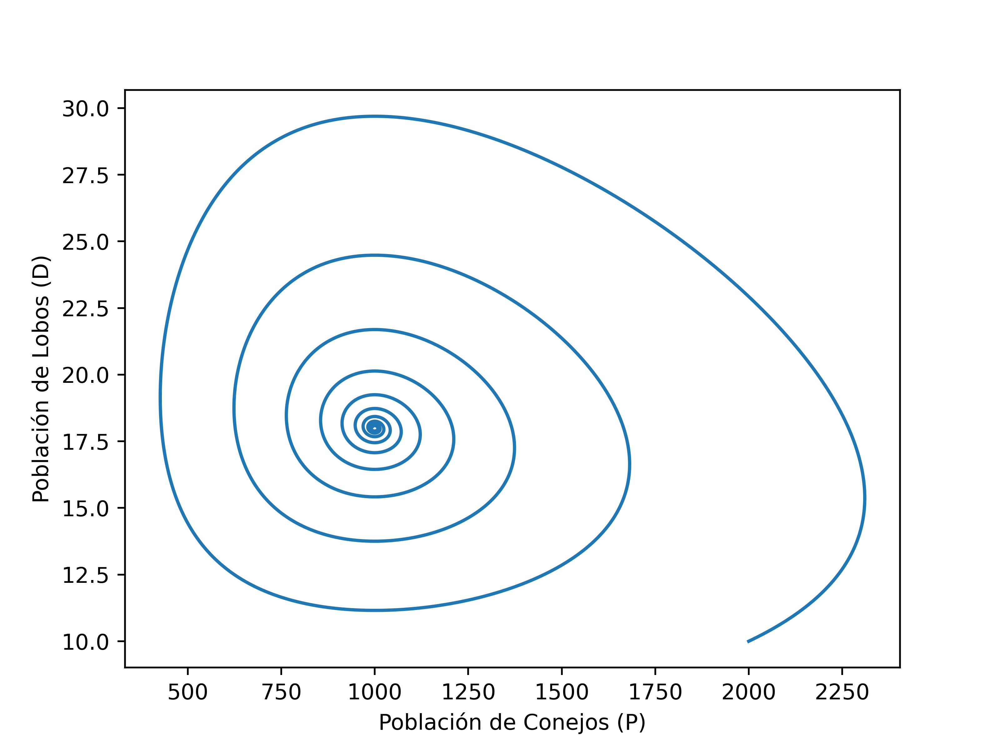
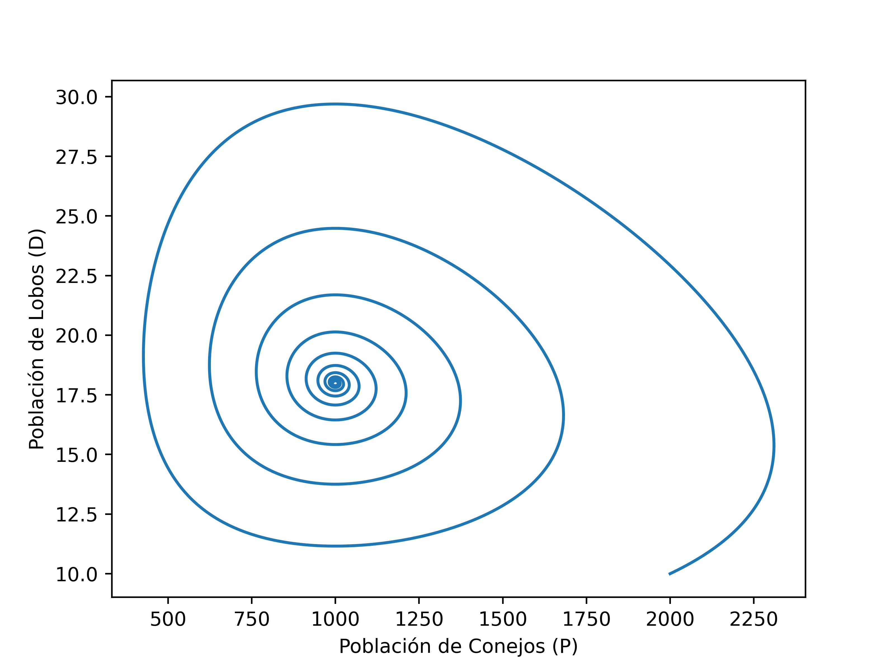

Las siguientes ecuaciones describen la dinámica de un sistema biológico en el cual dos especies interacúan, una como presa y la otra como depredador. Las ecuaciones de Lotka-Volterra, con capacidad de carga del ambiente (\(k\)) vienen dadas por:
\[ \begin{align*} \frac{\partial P}{\partial t}&=r_1 P \left(1-\frac{P}{k}\right)-a_1PD\\ \frac{\partial D}{\partial t}&=a_2 PD - r_2D, \end{align*} \]
donde \(r_1, r_2, a_1, a_2\) son parámetros (positivos) que representan las interacciones de las dos especies.
Ejemplo del modelo presentado con condición inicial \(P(0) = 2000\) conejos, \(D(0) = 10\) lobos y capacidad de carga \(k=10000\) conejos.
 

En la actualidad, científicos de todo el mundo intentan continuamente utilizar métodos numéricos para predecir la evolución de eventos geofísicos e industriales de alto impacto social, ambiental y económico. En particular, Chile es un país que constantemente ha sido afectado por tsunamis, deslizamientos de tierra e inundaciones que han dejado bajo el agua y lodo ciudades enteras.
La caracterización y estudio de estos fenómenos implica la modelización matemática y númerica de ecuaciones diferenciales parciales (EDPs) complejas y disponer de herramientas que permitan hacer simulaciones numéricas de estos eventos nos permitiría estar un paso delante de la ocurrencia de estos, así como también, tomar decisiones que permitan minimizar el impacto ambiental y social en caso de que se produzcan inevitablemente.
Desde el punto de vista físico-matemático, flujos viscosos como agua o aire se modelan mediante las ecuaciones de aguas someras (shallow water).